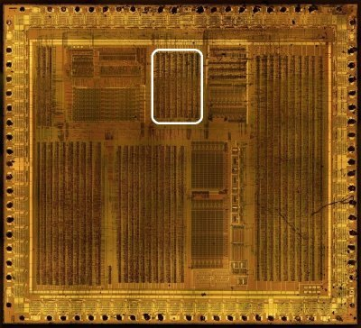
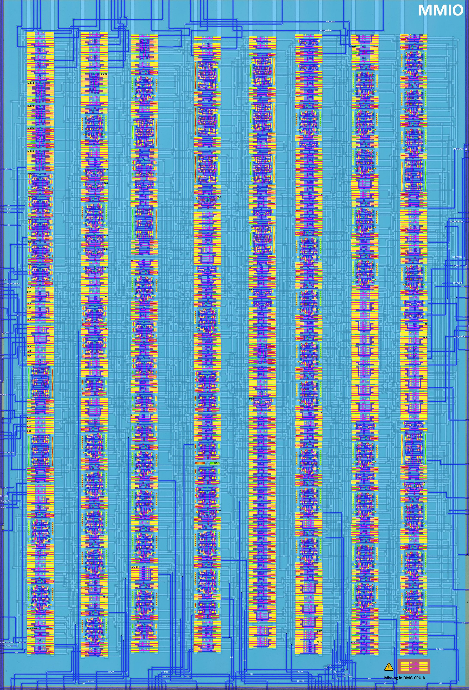
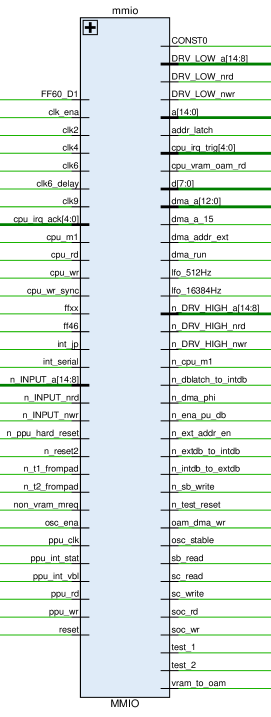
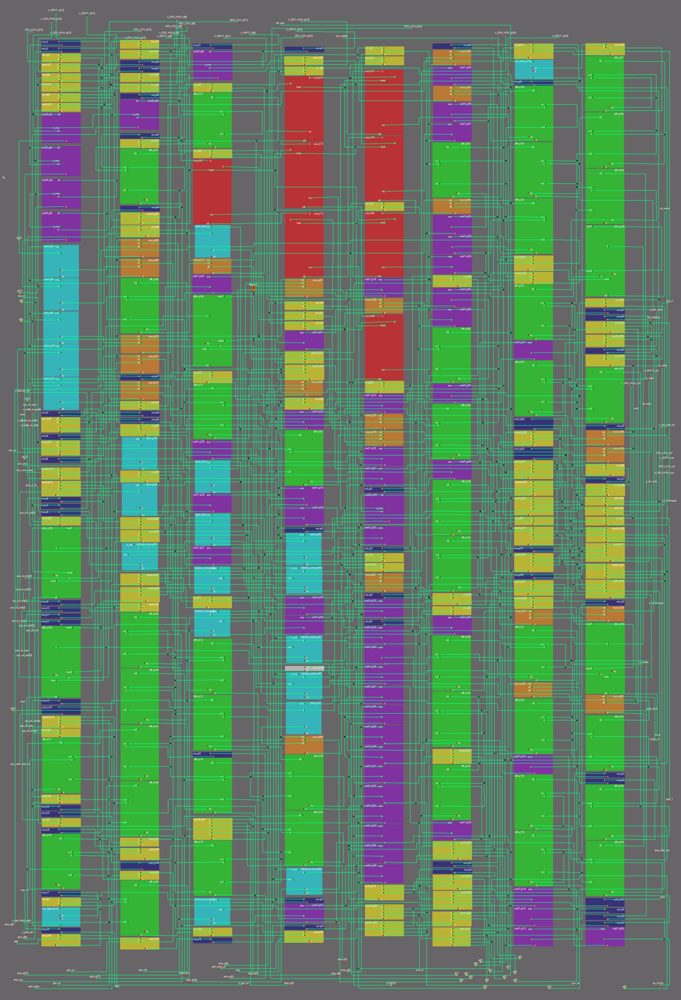
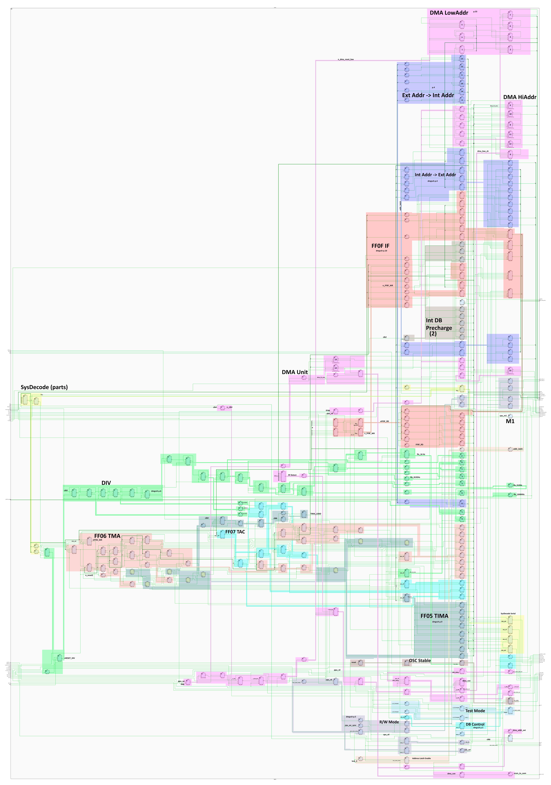

Memory Mapped I/O
The section is under development and requires refinement, the schematics have not been verified in the simulator, but the study has gained "critical mass"


Module Description
Contains most of the MMIO devices: Divider, Timer, DMA unit and interrupt controller (IF).
- Address/data bus: controls the bidirectional
a[14:8]1 andd[7:0]buses, the bus drivers (DRV_HIGH/DRV_LOW) and the address latch (addr_latch) - Interrupts: collects the interrupt sources (PPU, serial, joypad) and generates the CPU interrupts (
cpu_irq_trig/cpu_irq_ack) - DMA: DMA control signals (
dma_a,dma_run,dma_addr_ext), including OAM DMA (oam_dma_wr,vram_to_oam) - Clocks: generates the low-frequency oscillators (
lfo_512Hz,lfo_16384Hz); usesclk2,clk4,clk6,clk9 - Peripherals: PPU interface (
ppu_rd,ppu_wr,ppu_int_*), serial register controls (sc_*,sb_*), global SoC read/write mode (soc_wr,soc_rd) - System control: resets (
reset,n_reset2), test modes (test_1,test_2,n_test_reset), data bus isolation (n_*db_*)
Signals

| Signal Name | Direction | From / Where To | Description |
|---|---|---|---|
| FF60_D1 | Input | From APU | Value of debug register TEST_PAD.1. DIV operating mode: 0 - DIV is clocked with a 16384 Hz clock (Default); 1 - DIV is clocked with a 1 MHz clock (via clk9) |
| clk_ena | Input | From Core | Clock enable |
| clk2 | Input | From ClkGen | |
| clk4 | Input | From ClkGen | |
| clk6 | Input | From ClkGen | |
| clk6_delay | Input | From PPU2 | Delayed clk6 clock signal |
| clk9 | Input | From ClkGen | Used for DIV and TIMA |
| [4:0] cpu_irq_ack | Input | From Core | SM83 Core interrupt acknowledgments |
| cpu_m1 | Input | From Core | SM83 Core M1 cycle indicator |
| cpu_rd | Input | From Core | SM83 Core read signal |
| cpu_wr | Input | From Core | SM83 Core write signal |
| cpu_wr_sync | Input | From ClkGen | Synchronized SM83 Core write |
| ffxx | Input | From Arb | FFxx register area indicator |
| ff46 | Input | From PPU1 | DMA control register ($FF46) operation |
| int_jp | Input | From APU | Joypad interrupt |
| int_serial | Input | From Ser | Serial interrupt |
| [14:8] n_INPUT_a | Input | From Pads | External Address bus input (inverted value) |
| n_INPUT_nrd | Input | From Pad | /RD pad input (inverted value) |
| n_INPUT_nwr | Input | From Pad | /WR pad input (inverted value) |
| n_ppu_hard_reset | Input | From PPU2 | PPU hard reset |
| n_reset2 | Input | From ClkGen | Global reset signal (SoC internal) |
| n_t1_frompad | Input | From Pad | Test1 Pad input signal (inverted value) |
| n_t2_frompad | Input | From Pad | Test2 Pad input signal (inverted value) |
| non_vram_mreq | Input | From Arb | Non-VRAM memory request |
| osc_ena | Input | From Core | Crystal oscillator enable. When CPU drives this low, the crystal oscillator gets disabled to save power. This happens during STOP mode. |
| ppu_clk | Input | From PPU2 | PPU clock |
| ppu_int_stat | Input | From PPU1 | PPU status interrupt |
| ppu_int_vbl | Input | From PPU1 | PPU VBLANK interrupt |
| ppu_rd | Input | From PPU2 | PPU read signal |
| ppu_wr | Input | From PPU2 | PPU write signal |
| reset | Input | From Pad | System reset signal (external) |
| CONST0 | Bidir | Global | Constant 0 signal 2 |
| [14:8] DRV_LOW_a | Output | To Pads | Drive low control for external address bus |
| DRV_LOW_nrd | Output | To Pad | /RD pad drive low control |
| DRV_LOW_nwr | Output | To Pad | /WR pad drive low control |
| [14:0] a | Bidir | Global | Internal Address bus. For bits 14...8 the arbitration is applied 1. Bits 7...0 are read only |
| addr_latch | Output | To APU | Address latch signal |
| [4:0] cpu_irq_trig | Output | To Core | SM83 Core interrupt triggers |
| cpu_vram_oam_rd | Output | To Arb, PPU2 | CPU VRAM/OAM read strobe |
| [7:0] d | Bidir | Global | Internal Data bus |
| [12:0] dma_a | Output | To PPU2, APU | DMA address bus (bits 12:0; APU receives 7:0) |
| dma_a_15 | Output | To Arb | DMA address bit 15 |
| dma_addr_ext | Output | To Arb, APU, PPU2 | DMA address for external memory |
| dma_run | Output | To PPU2 | DMA run control |
| lfo_512Hz | Output | To APU | 512Hz low-frequency oscillator |
| lfo_16384Hz | Output | To Ser | 16384Hz oscillator |
| [14:8] n_DRV_HIGH_a | Output | To Pads | Drive high control for external address bus |
| n_DRV_HIGH_nrd | Output | To Pad | /RD pad drive high control |
| n_DRV_HIGH_nwr | Output | To Pad | /WR pad drive high control |
| n_cpu_m1 | Output | To Pad | Inverted CPU M1 signal |
| n_dblatch_to_intdb | Output | To Arb | DB latch to internal DB control |
| n_dma_phi | Output | To PPU1, PPU2 | DMA clock |
| n_ena_pu_db | Output | To Pads, Arb | 0: External Data bus pull-up enable |
| n_ext_addr_en | Output | To APU | External address enable (active low, TEST1 mode) |
| n_extdb_to_intdb | Output | To Arb | External to internal DB control |
| n_intdb_to_extdb | Output | To Arb | Internal to external DB control |
| n_sb_write | Output | To Ser | 0: SB register write |
| n_test_reset | Output | To ClkGen | Test reset signal |
| oam_dma_wr | Output | To PPU2 | OAM DMA write control |
| osc_stable | Output | To ClkGen | Oscillator stable signal |
| sb_read | Output | To Ser | SB register read |
| sc_read | Output | To Ser | SC register read |
| sc_write | Output | To Ser | SC register write |
| soc_rd | Output | Global | SoC read memory operation (@msinger: CPU_RD) |
| soc_wr | Output | Global | SoC write memory operation (@msinger: CPU_WR) |
| test_1 | Output | Global | Test1 mode - disable all internal CPU A/D bus drivers (@msinger: T1_nT2) |
| test_2 | Output | Global | Test2 mode - disable the internal Boot ROM (@msinger: nT1_T2) |
| vram_to_oam | Output | To Arb, PPU1, PPU2 | VRAM to OAM transfer control |
Register decode & bus behaviour (verified, issue #396)
Verified with the real MMIO netlist in HDL/soc/icarus/soc (tb_mmio,
all PASS; bus-alias-merged netlist mmio_merged.v, see the testbench
Readme for the conventions).
Write decode map (FFxx window = w100, FF00-03 window = w146)
| Decode clock | Address | Register |
|---|---|---|
w148 (nand4: a1·a0·soc_wr·w100) |
$FF07 | TAC |
w223 (nand4: a1·~a0·soc_wr·w100) |
$FF06 | TMA |
w99 (FF05 write, a0·~a1) + mux stage |
$FF05 | TIMA (load) |
| any write to $FF04 (w100·~a1·~a0) | $FF04 | DIV (reset) |
The decode clocks are low during the write window (soc_wr follows
ClkGen's cpu_wr_sync, i.e. high while the CPU writes) and the register
dffs capture on the rising edge produced when the window closes
(cpu_wr_sync falls - inside the clk2=1 non-precharge phase). The CPU
must hold the data ~6 ns past that edge (modelled in the testbench).
Read decode map
| Read enable | Address | Driven from |
|---|---|---|
w127 (w100·a1·a0·soc_rd) |
$FF07 | TAC dffs (read value = 0xF8|TAC) |
w89 (w100·a1·~a0·soc_rd) |
$FF06 | TMA dffs |
w33 (w100·~a1·a0·soc_rd) |
$FF05 | TIMA value |
w138 (w100·~a1·~a0·soc_rd) |
$FF04 | DIV counter |
w145/w144 (w146 window) |
$FF02/$FF01 | SC / SB read strobes to Ser |
soc_rd follows cpu_rd in normal mode; reads must be sampled while
clk2=1 (during clk2=0 the internal precharge drivers pull d high
and a sampled read shows x on zero bits).
IF ($FF0F) semantics
-
The flags are set asynchronously by their sources:
ppu_int_vbl-> bit0 (VBL),ppu_int_stat-> bit1 (STAT), timer overflow -> bit2,int_serial-> bit3,int_jp-> bit4; they appear oncpu_irq_trig. -
A $FF0F write sets the written bits (it does not clear them).
- Clearing happens through the CPU interrupt acknowledge
(
cpu_irq_ack, per-bit) - verified intb_mmio.
Oscillators (DIV clock source)
-
lfo_16384Hz= clk9 / 64: six divide-by-2 dff stages (g131/g132/ g130/g122/g129/g123, outputsw352/w37/w216/w141/w193/w217); measured 64 lfo edges per 4096 clk9 edges (tb_mmio). At the real clk9 (1.048 MHz) this is exactly 16384 Hz. -
lfo_512Hz= clk9 / 2048 (11 divider stages): measured 2 edges per 4096 clk9 edges (tb_mmio, PASS). -
FF60_D1(TEST_PAD.1) muxes the DIV/TIMA clock source between clk9 (fast mode) and the internal 16384 Hz chain (g265). -
writing $FF04 resets the divider (any data); read-back of DIV shows bus-contention
xon two bits under the plain bus model (const-1 keeper cellsg234/g235vs the read-back drivers) - needs the weak-bus model variant like the PPU suite.
Timer (TIMA/TMA/TAC) verified behaviour (issue #396)
-
TIMA is the loadable 8-bit counter (the
dmg_cntchaing167..g174with load gated byclk6/w99); writing $FF05 loads it, reading $FF05 returns it. -
TAC write decode
w148($FF07) stores{1,sel[1:0]}-style control; measured tick rates per clock select (tb_mmio, M-cycle = 256 ns in sim): | select | ticks per 16384 M-cycles | inferred source | |---|---|---| | 00 | 64 (~4096 Hz at real speed) | matches the DMG 4096 Hz source | | 01 | 1 | slow internal tap | | 10/11 | < 1 in the window | slow taps (need longer windows) | - Overflow: when TIMA passes $FF the counter reloads from TMA and
the timer IRQ is set - IF bit2 (
cpu_irq_trig[2]), cleared by the CPU IRQ acknowledge (tb_mmio PASS: TIMA 0xFE + TMA 0x3F + TAC 0x04 -> reloaded 0x3F and IF2 pulses).
Netlist

Annotated Design

Schematics
- DMA LowAddr
- DMA HiAddr
- Ext Addr -> Int Addr
- Int Addr -> Ext Addr
- FF0F IF
- Int DB Precharge (2)
- DMA Unit
- SysDecode (parts)
- M1
- DIV
- FF06 TMA
- FF07 TAC
- FF05 TIMA
- OSC Stable
- Test Mode
- R/W Mode
- DB Control
- Address Latch Enable
Map
| Row | Cells |
|---|---|
| 1 | not, not, nor, nand, nor, nand, nor, nand, bufif0, bufif0, bufif0, bufif0, latch, latch, latch, latch, latch, not, aon, not, aon, not, nand3, and3, not, not, not, nand, dffsr, not, not, not, not, dffsr, not, not2, nand3, nand, dffr, nand, not, not, nor, not, dffr, not, nor, nor_latch, not, and |
| 2 | nor, nand, not, not, nand, nor, not, bufif0, not, nor, dffr, not, nand3, or, mux, mux, dffr, mux, mux, not, mux, nor, not, not, or, latch, or, latch, nand3, nor3, latchnq_comp, nand3, and3, nand, dffr, dffr, dffr, dffr, nand, and, not2, nand, dffr, and |
| 3 | not, bufif0, nor, dffr, nor, cnt, latch, muxi, notif1, dffsr, or, dffr, notif1, latch, notif1, latch, notif1, latchnq_comp, or, latchnq_comp, dffr, dffr, not, dffr, nand6, dffr, latchnq_comp, nor, not |
| 4 | not, nand, nor, cnt, cnt, cnt, mux, nor, nor, nor, notif1, nand3, and3, muxi, or, notif1, dffr, notif1, notif1, not, latch, latchnq_comp, notif1, notif1, latchnq_comp, const, latchnq_comp, latch, mux, dffr, dffr, latchnq_comp, not, notif1, not, and |
| 5 | nor, nor, cnt, cnt, nor, cnt, notif1, muxi, cnt, or, notif1, muxi, muxi, notif1, notif1, not, bufif0, notif1, not, nor, nand, mux, not, notif1, not, notif1, notif1, notif1, notif1, notif1, notif1, notif1, notif1, notif1, notif1, notif1, notif1, notif1, and3, nand4, nand4 |
| 6 | not, muxi, notif1, muxi, notif1, notif1, dffr, muxi, notif1, notif1, notif1, or, notif1, notif1, dffr, notif1, dffr, notif1, dffr, dffr, or, nor, notif1, dffr, dffr, nand4, dffr, notif1, and4, not, not, and3, and4, nor4, nor5 |
| 7 | or3, nor_latch, not, dffr, dffr, dffr, and3, nand3, dffr, notif1, dffr, not3, nand4, not3, and4, nand4, and4, nor, and4, not, and4, not, and3, nand3, muxi, dffr, muxi, dffr, notif1, dffr, dffr, notif1, notif1, notif1 |
| 8 | and, dffr, dffr, dffr, dffsr, nor, not, not, and, nand3, not, and, dffr, not, muxi, muxi, or, not, nor3, nand, nand, nor, nand4, and4, nand4, and4, not, muxi, dffsr, mux, dffr, not, not, dffr, dffr, not2, not, not, not, notif1 |
-
The chip is topologically arranged so that the address bus arbitration is divided into three parts: in arb, in mmio, and in apu, to equalize wire lengths. ↩↩
-
The constant 0 is globally scattered throughout the chip. Each large module with cells has a
constcell whose output 0 is globally connected between all modules (so the input is marked as Bidir). ↩